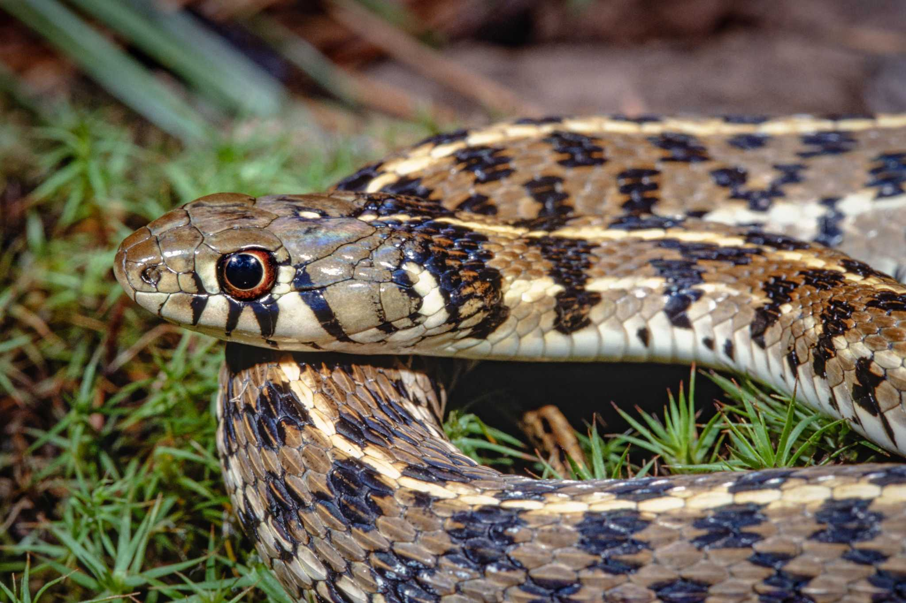

Pet Snakes
Garter Snakes
- Handleability: Garter snakes are known for their active and agile movements. Their slender bodies and strong muscles enable them to accelerate quickly and change direction rapidly. They may try to
explore their surroundings and escape your grip. Their ability to slither through tight spaces means you need to maintain a firm but gentle grip to prevent them from slipping away. - Care: Keeping a garter snake as a pet requires commitment and responsible care. Garter snakes require a firm enclosure with a secure lid to prevent them from escaping. They need heat mats or ceramic
heat emitters to heat up the enclosure, as well as hiding spots, and other enrichments. - Feeding: Garter snakes are considered good pets for reptile owners who do not feel comfortable with feeding rodents. This is because their diets consist of fish, earthworms, slugs, and snails. Some garter
snakes may also eat small rodents, but keeping them on a diet of earthworms and fish is completely acceptable. - Availability: Garter snakes are commonly available in the pet trade, making them relatively accessible for those interested in keeping them as pets. They are popular due to their small size, attractive colors,
and generally docile nature. You can find garter snakes for sale through pet stores, online reptile suppliers and reptile expos.

Guzman, R.A, Checkered Garter Snake, expressnews.com,
https://www.expressnews.com/lifestyle/article/Checkered-garter-snake-a-gentle-gorgeous-snake-15607331.php
Ball Pythons
- Handleability: Ball pythons are known for their generally calm and docile temperament, which makes them relatively easy to handle. They tend to be less active and more inclined to curl up
in a ball when handled, hence their name. Individual ball pythons may vary in their tolerance for handling, with some being more shy or defensive than others. - Care: Ball pythons require a suitable enclosure with appropriate temperature and humidity levels to mimic their natural habitat. A secure hiding spot, such as a snug hide box, should be
provided. Regular cleaning of their enclosure is necessary to maintain hygiene. Ball pythons are generally considered low-maintenance pets. - Feeding: Ball pythons are carnivorous and primarily feed on small rodents, such as: mice or rats. It is recommended to feed them frozen or thawed rodents for safety and convenience. Ball
pythons typically eat on a regular schedule, and their feeding frequency may vary based on age and size. - Availability: Ball pythons are one of the most popular pets in the reptile pet trade. Their popularity has led to a significant increase in pet stores, online markets, and reptile expos.

Gratwicke, B., Ball Python, wikipedia.org
https://commons.wikimedia.org/wiki/File:Python_regius_-_ball_python.jpg
Corn Snakes
- Handleability: Corn snakes are known for their docile and gentle nature, making them highly handleable. Compared to other species of snakes, they are less likely to show any aggression. Corn
snakes are typically comfortable being held and rarely become stressed during handling sessions. - Care: Corn snakes have relatively simple care requirements.They need an appropriately sized enclosure with proper heating and humidity levels. A hiding spot and suitable substrate
should be provided. - Feeding: Corn snakes are carnivorous and primarily eat mice or rats, with feeding frequency depending on their age and size. Regular cleaning and monitoring of their health are essential
aspects of their care. - Availability: Due to their popularity in the reptile community, corn snakes are widely available in pet stores, reptile specialty shops, and online reptile suppliers. They are one of the
most commonly bred and readily accessible snake species in the pet trade. Corn snakes come in a wide range of colors and
patterns, offering enthusiasts a variety of options to choose from.

Nathan Shepard, Corn Snake, thesprucepets.com
https://www.thesprucepets.com/corn-snakes-1236771


{kind=link}